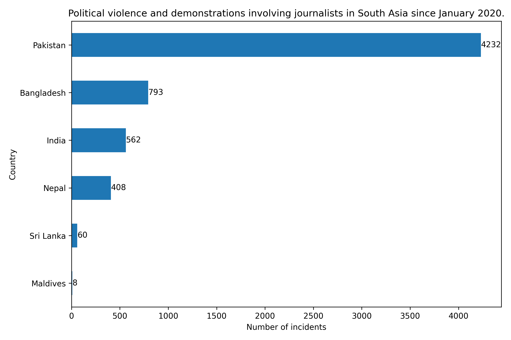

July 15, 2025
In the past five years, 247 people have died in political violence and demonstrations involving journalists and media workers across four South Asian countries.
According to a data analysis, Bangladesh has the highest number of deaths at 173, accounting for more than two-thirds of total fatalities.
ACLED defines riots as violent events involving three or more people who engage in destructive acts such as physical attacks, rock throwing, or property damage. The group tracks incidents where journalists and media workers are either specifically targeted or caught up in broader civilian violence.
The analysis covers six South Asian countries from January 2020 to July 2025. ACLED lacks data for Afghanistan and Bhutan. Of the remaining countries, Maldives and Sri Lanka reported no fatalities from such violence or demonstrations.
Pakistan recorded the second-highest death toll after Bangladesh, followed by India and Nepal.
Around one-fourth of deaths are from "violence against civilians." ACLED defines this as violence by armed groups against unarmed non-combatants. Among countries with reported deaths, only Bangladesh, India and Pakistan recorded fatalities under this category. The data shows political militias are responsible for nearly 90% of these deaths across the three countries.
ACLED has recorded 6,000 incidents of political violence and demonstrations in South Asia during this period. Pakistan has the highest number of political violence incidents, accounting for more than two-thirds of the total.
However, Bangladesh has the highest fatality rate in political violence. The data shows that, on average, one person died in every five reported incidents in Bangladesh. Pakistan maintained the lowest fatality rate among countries with reported deaths, with nine fatalities per 1,000 incidents.
The dataset includes all civilians who engage professionally in news media creation. ACLED updates the data weekly, typically on Mondays or Tuesdays. This analysis was downloaded on July 8, 2025, and covers events through July 4, 2025.
The timeframe begins in January 2020 to ensure consistent data across all countries, as ACLED began collecting data for the Maldives only from early 2020.